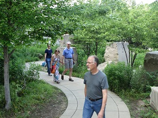
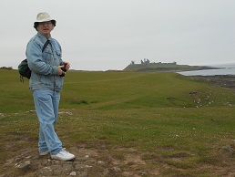
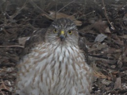

Dear friends,
Mark and I hope that this letter finds you well and enjoying the winter and holiday season.
This year for the first time in decades (what an old-person thing to say!) I got to see my brothers and sisters-in-law on two separate occasions, including in Lincoln for Thanksgiving, which was very neat.
|  |
Mark and I are continuing to work with several PhD students at UNL. This August one of them - Nick Owad - graduated. In June we went to a conference in England with another of our students (Maranda Franke) and a postdoc who is working with us (Tim Susse), and took a couple of day trips - here are pictures of them from Hadrian's (Roman) Wall and in North York Moors national park. In July three former students - Nathan Corwin, Melanie DeVries, and Ashley Johnson - all came to visit (and work) for a week (but somehow I never got my camera out for that!).
We also continue to do a lot of walking/hiking in various places. For both of us, the favorite hike of the year was in Rocky Mountain national park, which we drove to in August for a few days of relaxation before the start of the fall semester. We took the trail from Wild Basin to Ouzel Lake, the first half following a series of cascades and waterfalls. In the second half the trail leaves most of the people behind, and climbs up to near the tree line, with lots of views of the surrounding mountains. We stopped for lunch near the end of the trail, and while quietly munching our food and enjoying the scenery, we gradually became aware that we were surrounded not just by the interesting birds we'd been looking at, but also by lots of marmots! They stand on boulders or tree stumps and make chirping/whistling sounds to talk to each other, and are remarkably cute.
I couldn't resist including a few pictures from other hikes/excursions, too: Mountain laurel on a hike in the Shawangunks with Mark and his sister, Mark on the trail from Craster to Dunstanburgh Castle in northern England,
|  |
At home we had some excitement in May, when a tornado touched down a few miles away (the first time for a tornado in Lincoln - it only knocked over a fence and a swing set!) and at the same time we had a hailstorm with hailstones big enough to break through the skylight in our bathroom. Later in the summer we had a visit from a baby cardinal on our deck, and an inquisitive hawk in our back yard.
|
|  |
Happy holidays and new year to all of you! Mark and I hope you've had a good year in 2016, wish you the very best for 2017.
Susan